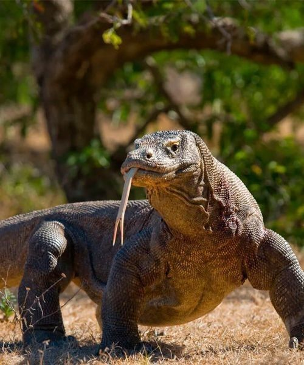

Komodo
Komodo merupakan fauna khas Indonesia yang termasuk hewan langka dan dilindungi. Hewan ini hanya ditemukan secara alami di beberapa pulau di Nusa Tenggara Timur, terutama Pulau Komodo, Rinca, dan sekitarnya. Kelangkaan komodo disebabkan oleh habitatnya yang terbatas serta berbagai ancaman terhadap kelangsungan hidupnya. Karena itu, komodo perlu dilindungi agar populasinya tetap terjaga dan tidak semakin berkurang.